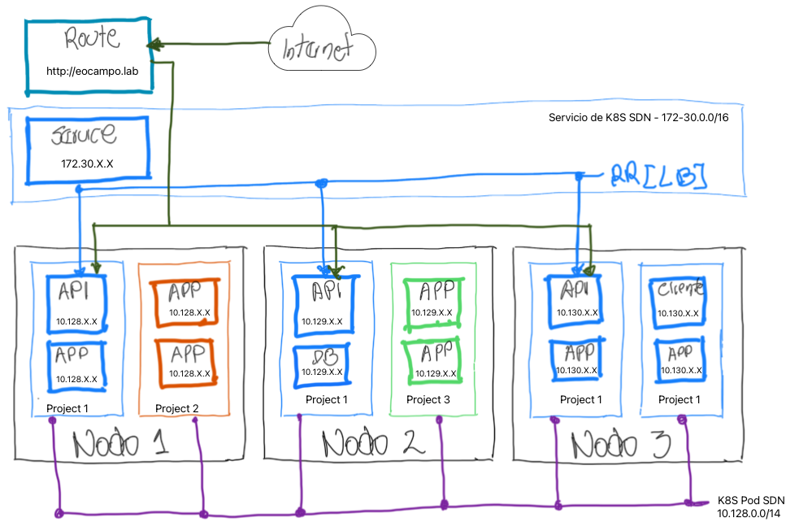
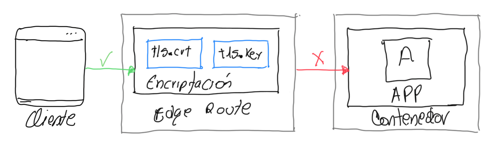

Capitulo 4 - Seguridad de Redes
Proteger el tráfico de red entre las apps tanto al interior como por fuera del clúster
Protección Externa de Tráfico con TLS
Permitir y proteger las conexiones de red de las apps detro del clúster de OCP
OCP tiene muchas formas de exponer las apps a redes externas, se puede a través de tráfico HTTP, HTTPS, aplicaciones TCP y no TCP. Algunos de ests métodos son el tipo servicio o NodePort o balanceador de carga. Otros puedes utilizar su poropio API como Ingress y Route.
En Con las routes de OCP se pueden exponer las apps a redes externas con un hostname único y accesible públicamente. Las routes se basan en un complemento del enrrutador para redirigir el tráfico de la IP pública a los pods. Ejemplo de diagrama de routes

Encripción de routes
La no cifradas son las mas fácil de configurar por no re querir certificados o llaves. Routes cifradas admiten soporta avrios tipos de las capa de seguridad TLS para los certificados del cliente y están disponibles en varios tipos de terminación
| OpenShift Route Encryption | Descripción |
|---|---|
| Edge | La terminación TLS ocurre en el router. Allí es donde residen los ceertificado TLS y debe ser configurados en el route de lo contrario OCP asigna su propio certificado. Desde router a los endpoints no está cifrada |
| Passthrough | El tráfico cifrado se envía directamente al pod sin el router. La app es responsable de los certificados. Soporta autenticación mutua, entre la app y el cliente que accede a ella |
| Re-encryption | Variación de Edge. El path completo está encriptado, ya que el router termian con certificado TLS y vuelve a encriptar su conexión al punto final y este podría ser uno diferente. |
Seguridad de la APPs con routes Edge
Antes de crear route cifrada se requere el certificado TLS. Con el siguiente comando se crea route Edge cifrada con certificado TLS personalizado (entregado por terceros)
oc create route edge --service api-frontend --hostname api.apps.acme.com --key api.key --cert api.crt
Si se opmite el --key y el --cert el operador ingress de RHOCP asignará un certificado CA. Con el comando oc get secrets/router-ca -n openshift-ingress-operator -o yaml se puede ver el certficado que proporciana la CA interna.

NOTA: Las politicas de red pueden ayudarle a proteger en el trafico de red interno las APP o entre sus proyectos.
Seguridad de la APPs con Re-encrypt Routes
Esta comunicación interna requiere un certificado para el servicio de destino con un FQDN de OCP, como el nombre de host mi-app.namespace.svc.cluster.local.
OpenShift proporciona el controlador service-ca para generar y firmar certificados de servicio para el tráfico interno
Documentación
- Configuring Routes
- Configuring Ingress Cluster Traffic
- Self-Serviced End-to-end Encryption Approaches for Applications Deployed in OpenShift
Configurar Politicas de Redes
- Restringir el tráfico de red entre proyecto y pods
Con las politicas de red, se pueden configurar políticas separadas para pods individuales. se pueden crear sin tener privilegios Admin. Se pueden crear zonas lógicas en la SDN de la organización.
A diferencias de los FW tradicionales que funcionan con reglas de IP, K8S controlan el tráfico con etiquetas (labels) entre pods. Para pemitir la cominuación entre los pods de diferentes namespace se agrega allí el label y se crea la politica de red con este label. Se utiliza selectors en spec para asiganar a los pods destino la política y selectors en spec.ingress para los pods de origen. Asignación de etiqueta:
oc label namespace eocampo network=network-1
La siguiente política de red se aplica a cualquier pod con el label deployment="product-catalog" en namespace network-1. El namespace network-2 tiene el label network=network-2. La política permite el tráfico TCP a través del puerto 8080 desde pods cuya label sea role="qa" en namespaces con el label network=network-2.
kind: NetworkPolicy
apiVersion: networking.k8s.io/v1
metadata:
name: network-1-policy
namespace: network-1
spec:
podSelector:
matchLabels:
deployment: product-catalog
ingress:
- from:
- namespaceSelector:
matchLabels:
network: network-2
podSelector:
matchLabels:
role: qa
ports:
- port: 8080
protocol: TCP
La siguiente política de red permite el tráfico desde cualquier pod en namespace con el label network=network-1 hacia cualquier pod y puerto en el namespace network-2. Esta política es menos restrictiva que la política network-1, porque no restringe el tráfico de ningún pod del namespace network-1.
kind: NetworkPolicy
apiVersion: networking.k8s.io/v1
metadata:
name: network-2-policy
namespace: network-2
spec:
podSelector: {}
ingress:
- from:
- namespaceSelector:
matchLabels:
network: network-1
Políticas de red entre Proyects
Permiten gestionar la seguridad entre proyectos («tenants») con mínimo privilegio. el siguiente ejemplo combina los selectors en una regla y, de este modo, sólo permite el acceso desde pods con el label app=mobile en namespace con el label network=dev:
.
.
.
ingress:
- from:
- namespaceSelector:
matchLabels:
network: dev
podSelector:
matchLabels:
app:
Del ejemplo anterior podSelector dse modifica para que sea un elemento de la lista from, cualquier pod de namespace con el label network=dev o cualquier pod con el label app=mobile de cualquier namespace puede llegar a los pods que coincidan con el campo podSelector de nivel superior:
.
.
.
ingress:
- from:
- namespaceSelector:
matchLabels:
network: dev
- podSelector:
matchLabels:
app: mobile
Políticas de red Deny-all ejemplo:
Se aplica a de un proyecto si el selector está vacio:
kind: NetworkPolicy
apiVersion: networking.k8s.io/v1
metadata:
name: default-deny
spec:
podSelector: {}
NOTA: OCP no restringe el tráfico si no tiene asignadas políticas de red. Cuando se crea un environment para permitir el tráfico, se debe incluir la política deny-all
Permitiendo el acceso desde los servicios del Cluster OCP
En algunas ocasiones es necesario que algunos servicios como monitoreo o router que permite el acceso a los recurso desde afuera. Ejemplo de oermitir acceso de ingress monitoreo a los pods:
---
apiVersion: networking.k8s.io/v1
kind: NetworkPolicy
metadata:
name: allow-from-openshift-ingress
spec:
podSelector: {}
ingress:
- from:
- namespaceSelector:
matchLabels:
policy-group.network.openshift.io/ingress: ""
---
apiVersion: networking.k8s.io/v1
kind: NetworkPolicy
metadata:
name: allow-from-openshift-monitoring
spec:
podSelector: {}
ingress:
- from:
- namespaceSelector:
matchLabels:
network.openshift.io/policy-group: monitoring
NOTAS: - Las políticas de red no bloquean el tráfico de los pods que utilizasn la red del host a los pods del mismo nodo - Las políticas de red sólo controlan el tráfico interno de los pods que no utilizan redes de host - Las políticas de red controlan todo el tráfico procedente de otros nodos
Documentación
Protección Interna de Tráfico con TLS
- Configurar y uso automático de servicio de certificados
Environments Zero-trust
Inicia con un estado de no confianza, donde solo se puede acceder a lo permitido y la comunicación debe estar cifrada donde las APPs van a verificar la autenticidad de los servidores. OCP cifra por defecto el tráfico de red entre los nodos y el control plane e impiden que el tr¿áfico externo vea el tráfico interno. Esto requiere una entidad CA de confianza que firme los certificados
Servicio de Certificados
OCP tiene el controlador service-ca para firmar los certificados de tráfico interno, el cual crea un secret que se llena con certificado firmado y su llave. Se puede montar el secret como un volumen para usar el certificado. Las APPs cliente deben confiar en la CA del controlador service-ca
Creación de Certificados de servicio
El controlador service-ca crea el secret "mi-secret" en el mismo namespace si no existe, y lo rellena con un certificado firmado y un par de llaves para el service:
oc annotate service hello service.beta.openshift.io/serving-cert-secret-name=hello-secret
Después de que OCP genera el secret, este se debe montar en el deployment de la APP y dependará de cada APP donde se ubica. Ejemplo de un ngnix:
spec:
template:
spec:
containers:
- name: hello
volumeMounts:
- name: hello-volume
mountPath: /etc/pki/nginx/
volumes:
- name: hello-volume
secret:
defaultMode: 420
secretName: hello-secret
items:
- key: tls.crt
path: server.crt
- key: tls.key
path: private/server.key
Configuración de la aplicación de servicio al cliente
Si un cliente requiere validar un certificado, la APP debe tener el Bundle CA que firmó ese certificado. Eso se puede aplicar como:
| Mount Blunde CA | Descripción inyección del Bundle CA |
|---|---|
| config map | service.beta.openshift.io/inject-cabundle=true oc annotate configmap ca-bundle service.beta.openshift.io/inject-cabundle=true Debe utilizar un config map dedicado para evitar sobrescribir los datos existentes |
| API Service | En el campo spec.caBundle |
| CRD | En el campo spec.conversion.webhook.clientConfig.caBundle |
| validación webhook | En el campo clientConfig.caBundle |
Rotación de llaves
Son válidos por 26 meses y se rotan o cambian cada 13 meses, por lo tanto hay un periodo de gracia del certificado CA original. Por ello el pod debe reiniciarse. También se puede rotan manualmente. Primero se elimina el certificado existente y luego el controlaldor service-ca generará uno nuevo:
oc delete secret certificate-secret
oc delete secret/signing-key -n openshift-service-ca
Otras opciones de servicios de certificados
- el operador
certmanager - Red Hat OCP Service Mesh